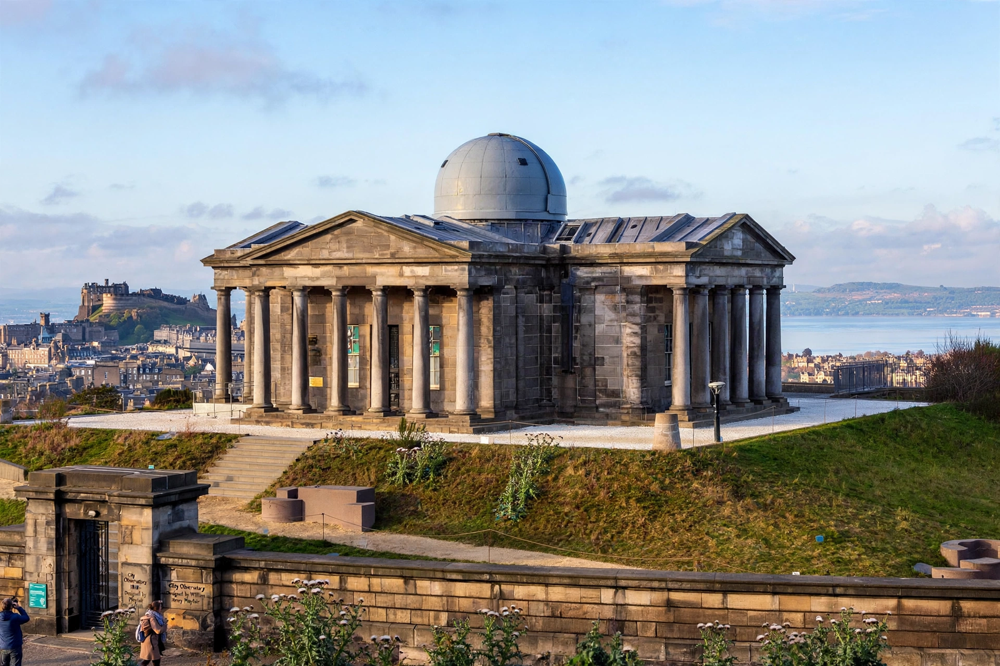

Astronomer Royal for Scotland
From Wikipedia, the free encyclopedia

The Astronomer Royal for Scotland is a senior Scottish astronomical post created in 1834, originally the director of the Royal Observatory, Edinburgh and Regius Professor of Astronomy at the University of Edinburgh. Since 1995 the title has been held separately from the directorship as an honorary position awarded to a distinguished astronomer based in Scotland.
History
The first holder was Thomas Henderson, who from Edinburgh made the first successful measurement of stellar parallax (of Alpha Centauri, published 1839). Successors included Charles Piazzi Smyth, known for pyramidology controversies and high-altitude observing in Tenerife, and Ralph Sampson. For much of the nineteenth and twentieth centuries the post carried responsibility for Scotland's official time service.
Modern holders
When the Royal Observatory Edinburgh's directorship was restructured in 1995, the title passed separately: Malcolm Longair held it 1995–2012, followed by John C. Brown (2013–2019) — the 'motorcycling astronomer' known for outreach — and Catherine Heymans (from 2020), an observational cosmologist and the first woman in the role.